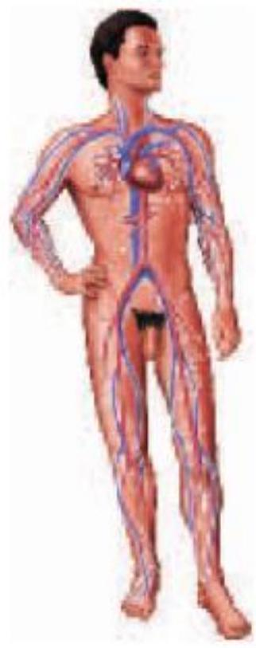
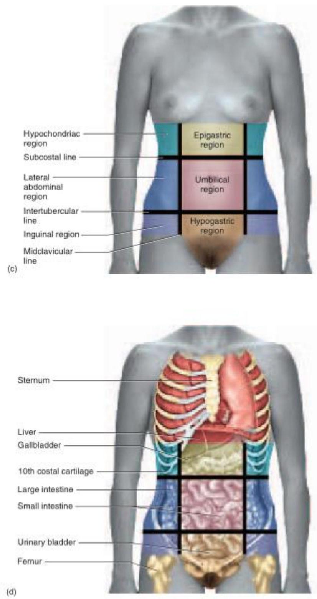
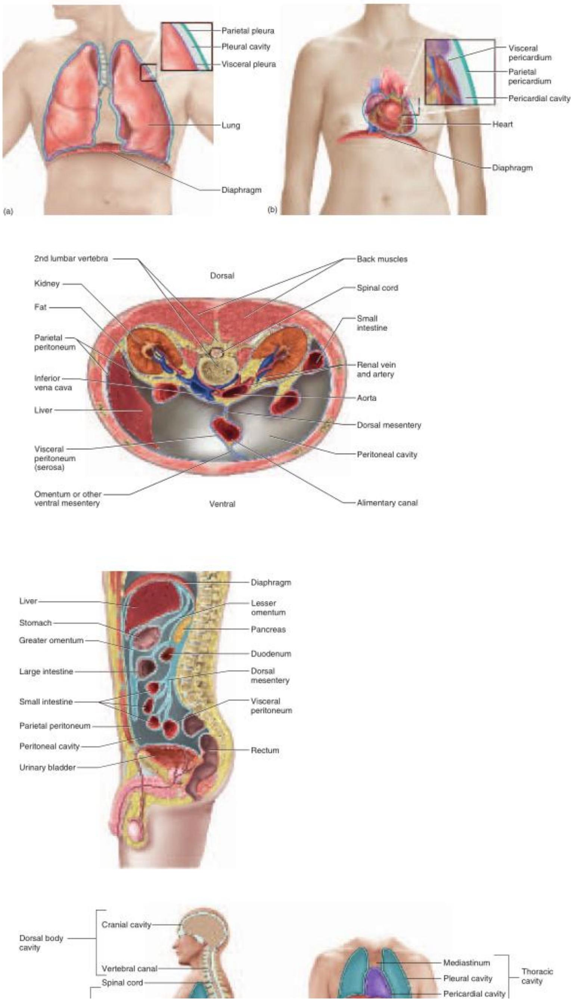
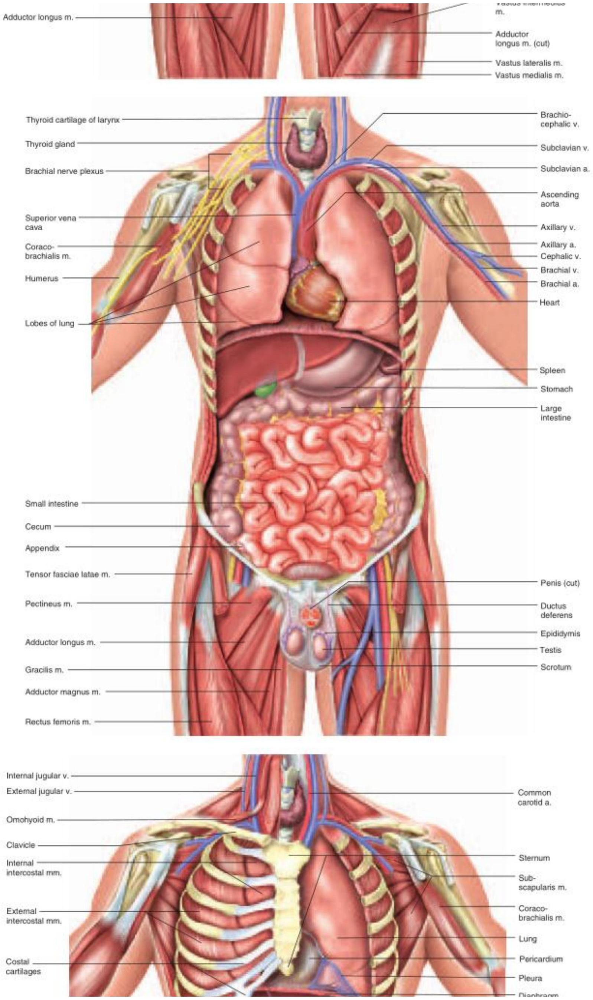
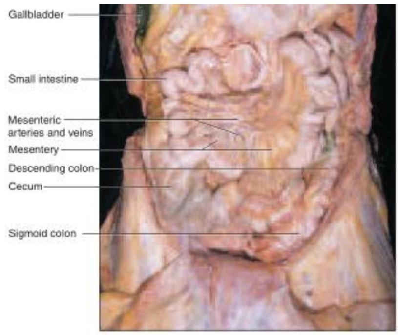
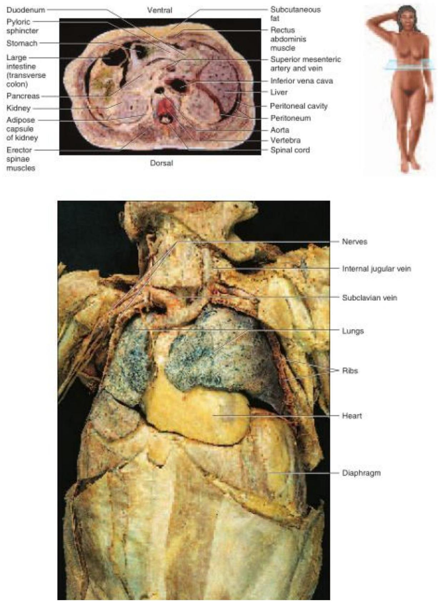

GENERAL ORIENTATION OF ANATOMY AND PHYSIOLOGY
SCOPE OF ANATOMY AND PHSIOLOGY
No branch of science hits as close to home as the science of our own bodies. We're grateful for the dependability of our hearts; we're awed by the capabilities of muscles and joints displayed by Olympic athletes; and we ponder with philosophers the ancient mysteries of mind and emotion. We want to know how our body works, and when it malfunctions, we want to know what is happening and what we can do about it. Even the most ancient writings of civilization include medical documents that attest to humanity's timeless drive to know itself. You are embarking on a subject that is as old as civilization, yet one that grows by thousands of scientific publications every week. This book is an introduction to human structure and function, the biology of the human body. It is meant primarily to give you a foundation for advanced study in health care, exercise physiology, pathology, and other fields related to health and fitness. Beyond that purpose, however, it can also provide you with a deeply satisfying sense of self-understanding. As rewarding and engrossing as this subject is, the human body is highly complex and a knowledge of it requires us to comprehend a great deal of detail. The details will be more manageable if we relate them to a few broad, unifying concepts. The aim of this chapter, therefore, is to introduce such concepts and put the rest of the book into perspective. We consider the historical development of anatomy and physiology, the thought processes that led to the knowledge in this book, the meaning of human life, and a central concept of physiology called homeostasis. The Preface to Students describes some ways in which this book and its companion materials can be used to learn this subject most effectively. If you haven't already read it, I urge you to do so before continuing.
The Scope of Anatomy and Physiology
Anatomy is the study of structure, and physiology is the study of function. These approaches are complementary and never entirely separable. When we study a structure, we want to know, What does it do? Physiology lends meaning to anatomy and, conversely, anatomy is what makes physiology possible. This unity of form and function is an important point to bear in mind as you study the body. Many examples of it will be apparent throughout the book-some of them pointed out for you, and others you will notice for yourself
Anatomy-The Study of Form
The simplest way to study human anatomy is the observation of surface structure, for example in performing a physical examination or making a clinical diagnosis from surface appearance. But a deeper understanding of the body depends on dissection-the careful cutting and separation of tissues to reveal their relationships. Both anatomy1 and dissection literally mean "cutting apart"; dissecting used to be called "anatomizing." The dissection of a dead human body, or cadaver, is an essential part of the training of many health science students (fig. 1.1). Many insights into human structure are obtained from comparative anatomy-the study of more than one species in order to learn generalizations and evolutionary trends. Students of anatomy often begin by dissecting other animals with which we share a common ancestry and many structural similarities. Dissection, of course, is not the method of choice when studying a living person! Physical examinations involve not only looking at the body for signs of normalcy or disease but also touching and listening to it. Palpation is feeling structure with the fingertips, such as palpating a swollen lymph node or taking a pulse. Auscultation (AWS-cul-TAY-shun) is listening to the natural sounds made by the body, such as heart and lung sounds. In percussion, the examiner taps on the body and listens to the sound for signs of abnormalities such as pockets of fluid or air. Structure that can be seen with the naked eye, whether by surface observation or dissection, is called gross anatomy. Ultimately, though, the functions of the body result from its individual cells. To see those, we usually take tissue specimens, thinly slice and stain them, and observe them under the microscope. This approach is called histology (microscopic anatomy). Histopathology is the microscopic examination of tissues for signs of disease. Ultrastructure refers to fine details, down to the molecular level, revealed by the electron microscope
Physiology-The Study of Function
Physiology7 uses the methods of experimental science discussed later. It has many subdisciplines such as neurophysiology (physiology of the nervous system), endocrinology (physiology of hormones), and pathophysiology (mechanisms of disease). Partly because of limitations on experimentation with humans, much of what we know about bodily function has been gained through comparative physiology, the study of how different species have solved problems of life such as water balance, respiration, and reproduction. Comparative physiology is also the basis for the development of new drugs and medical procedures. For example, a cardiac surgeon cannot practice on humans without first succeeding in animal surgery, and a vaccine cannot be used on human subjects until it has been demonstrated through animal research that it confers significant benefits without unacceptable risks.
The Origins of Biomedical Science
objectives
give examples of how modern biomedical science emerged from an era of superstition and authoritarianism; and describe the contributions of some key people who helped to bring about this transformation.
Health science has progressed far more in the last 25 years than in the 2,500 years before that, but the field did not spring up overnight. It is built upon centuries of thought and controversy, triumph and defeat. We cannot fully appreciate its present state without understanding its past-people who had the curiosity to try new things, the vision to look at human form and function in new ways, and the courage to question authority
The Beginnings of Medicine
As early as 3,000 years ago, physicians in Mesopotamia and Egypt treated patients with herbal drugs, salts, physical therapy, and faith healing. The "father of medicine," however, is usually considered to be the Greek physician Hippocrates (c. 460-c. 375 B.C.E.). He and his followers established a code of ethics for physicians, the Hippocratic Oath, that is still recited in modern form by many graduating medical students. Hippocrates urged physicians to stop attributing disease to the activities of gods and demons and to seek their natural causes, which could afford the only rational basis for therapy. Aristotle (384322 B.C.E.) believed that diseases and other natural events could have either supernatural causes, which he called theologi, or natural ones, which he called physici or physiologi. We derive such terms as physician and physiology from the latter. Until the nineteenth century, physicians were called "doctors of physic." In his anatomy book, Of the Parts of Animals, Aristotle tried to identify unifying themes in nature. Among other points, he argued that complex structures are built from a smaller variety of simple components-a perspective that we will find useful later in this chapter..
The Birth of Modern Medicine
Medical science advanced very little during the Middle Ages. Even though some of the most famous medical schools of Europe were founded during this era, the professors taught medicine primarily as a dogmatic commentary on Galen and Aristotle, not as a field of original research. Medieval medical illustrations were crude representations of the body that served more to decorate a page than to depict the body realistically (fig. 1.2). Some were astrological charts that showed which sign of the zodiac was thought to influence each organ of the body. From such pseudoscience came the word influenza, Italian for influence. Free inquiry was less inhibited in the Muslim world than in Christendom. Ibn Sina (980-1037), known in the West as Avicenna or "the Galen of Islam," studied Galen and Aristotle, combined their findings with original discoveries, and questioned authority when the evidence demanded it. Muslim medicine soon became superior to Western medicine, and Avicenna's textbook, The Canon of Medicine, became the leading authority in European medical schools until the sixteenth century. Modern medicine began around the sixteenth century in the innovative minds of such people as the anatomist Andreas Vesalius and the physiologist William Harvey. Andreas Vesalius (1514-64) taught anatomy in Italy. In his time, cadaver dissection had resumed for the purpose of autopsies and gradually found its way into the training of medical students throughout Europe. Dissection was an unpleasant business, however, and most professors considered it beneath their dignity. In these days before refrigeration or embalming, the odor from the decaying cadaver was unbearable. Dissections were conducted outdoors in a nonstop 4-day race against decay. Bleary medical students had to fight the urge to vomit, lest they incur the wrath of an overbearing professor. Professors typically sat in an elevated chair, the cathedra, reading dryly from Galen or Aristotle while a lower-ranking barber-surgeon removed putrefying organs from the cadaver and held them up for the students to see. Barbering and surgery were considered to be "kindred arts of the knife"; today's barber poles date from this era, their red and white stripes symbolizing blood and bandages. Vesalius broke with tradition by coming down from the cathedra and doing the dissections himself. He was quick to point out that much of the anatomy in Galen's books was wrong, and he was the first to publish accurate illustrations for teaching anatomy (fig. 1.3). When others began to plagiarize his illustrations, Vesalius published the first atlas of anatomy, De Humani Corporis Fabrica (On the Structure of the Human Body), in 1543. This book began a rich tradition of medical illustration that has been handed down to us through such milestones as Gray's Anatomy (1856) and the vividly illustrated atlases and textbooks of today. Anatomy preceded physiology and was a necessary foundation for it. What Vesalius was to anatomy, the Englishman William Harvey (1578-1657) was to physiology. Harvey is remembered especially for a little book he published in 1628, On the Motion of the Heart and Blood in Animals. Authorities before him believed that digested food traveled to the liver, turned into blood, and then traveled through the veins to organs that consumed it. Harvey measured cardiac output in snakes and other animals, however, and concluded that the amount of food eaten could not possibly account for so much blood. Thus, he inferred that blood must be recycled-pumped out of the heart by way of arteries and returned to the heart by way of veins. Capillaries, the connections between arteries and veins, had not been discovered yet, but Harvey predicted their existence. Modern medicine also owes an enormous debt to two inventors from this era. Antony van Leeuwenhoek (anTOE-nee vahn LAY-wen-hook) (1632-1723), a Dutch textile merchant, was the first to invent a microscope capable of visualizing single cells. In order to examine the weave of fabrics more closely, he ground a beadlike lens and mounted it in a metal plate equipped with a movable specimen clip (fig. 1.4). This simple (single-lens) microscope magnified objects 200 to 300 times. Out of curiosity, Leeuwenhoek examined a drop of lake water and was astonished to find a variety of microorganisms-"little animalcules," he called them, "very prettily a-swimming." He went on to observe practically everything he could get his hands on, including blood cells, blood capillaries, sperm, and muscular tissue. Probably no one in history had looked at nature in such a revolutionary way. Leeuwenhoek opened the door to an entirely new understanding of human structure and the causes of disease. He was praised at first, and reports of his observations were eagerly received by scientific societies, but this public enthusiasm did not last. By the end of the seventeenth century, the microscope was treated as a mere toy for the upper classes, as amusing and meaningless as a kaleidoscope. Leeuwenhoek had even become the brunt of satire. Leeuwenhoek's most faithful admirer was the Englishman Robert Hooke (16351703), who developed the first practical compound microscope-a tube with a lens at each end. The second lens further magnified the image produced by the first (fig. 1.5a). Hooke invented many of the features found in microscopes used today: a stage to hold the specimen, an illuminator, and coarse and fine focus controls. His microscopes produced poor images with blurry edges (spherical aberration) and rainbow-colored distortions (chromatic aberration), but poor images were better than none. Although Leeuwenhoek was the first to see cells,Hooke named them. In 1663, he observed thin shavings of cork with his microscope and observed that they "consisted of a great many little boxes," which he called cells after the cubicles of a monastery (fig. 1.5b). He published these observations in his book, Micrographia, in 1665. In nineteenthcentury Germany, Carl Zeiss (1816-88) and his business partner, physicist Ernst Abbe (1840-1905), greatly improved the compound microscope, adding the condenser and developing superior optics that reduced chromatic and spherical aberration. Chapter 3 describes some more recently invented types of microscopes. With improved microscopes, biologists began eagerly examining a wider variety of specimens. By 1839, botanist Matthias Schleiden (180481) and zoologist Theodor Schwann (1810-82) concluded that all organisms were composed of cells. This was the first tenet of the cell theory, added to by later biologists and summarized in chapter 3. The cell theory was perhaps the most important breakthrough in biomedical history, because all functions of the body are now interpreted as the effects of cellular activity. Although the philosophical foundation for modern medicine was largely established by the time of Leeuwen hoek, Hooke, and Harvey, clinical practice was still in a dismal state. Few doctors attended medical school or received any formal education in basic science or human anatomy. Physicians tended to be ignorant, ineffective, and pompous. Their practice was heavily based on expelling imaginary toxins from the body by bleeding their patients or inducing vomiting, sweating, or diarrhea. They performed operations with dirty hands and instruments, spreading lethal infections from one patient to another. Fractured limbs often became gangrenous and had to be amputated, and there was no anesthesia to lessen the pain. Disease was still widely attributed to demons and witches, and many people felt they would be interfering with God's will if they tried to treat it.
Living in a Revolution
This short history brings us only to the threshold of modern biomedical science; it stops short of such momentous discoveries as the germ theory of disease, the mechanisms of heredity, and the structure of DNA. In the twentieth century, basic biology and biochemistry have given us a much deeper understanding of how the body works. Technological advances such as medical imaging (see insight 1.5, p. 22) have enhanced our diagnostic ability and lifesupport strategies. We have witnessed monumental developments in chemotherapy, immunization, anesthesia, surgery, organ transplants, and human genetics. By the close of the twentieth century, we had discovered the chemical "base sequence" of every human gene and begun using gene therapy to treat children born with diseases recently considered incurable. As future historians look back on the turn of this century, they may exult about the Genetic Revolution in which you are now living. Several discoveries of the nineteenth and twentieth centuries, and the men and women behind them, are covered in short historical sketches in later chapters. Yet, the stories told in this chapter are different in a significant way. The people discussed here were pioneers in establishing the scientific way of thinking. They helped to replace superstition with an appreciation of natural law. They bridged the chasm between mystery and medication. Without this intellectual revolution, those who followed could not have conceived of the right questions to ask, much less a method for answering them.
General Orientation to Human Anatomy
- Anatomical Position
- Anatomical Planes
- Directional Terms
- Surface Anatomy
- Body Cavities and Membranes
- Organ Systems
- Chapter Review
Anatomical Position
Anatomical position is a stance in which a person stands erect with the feet flat on the floor, arms at the sides, and the palms, face, and eyes facing forward (fig. A.1). This position provides a precise and standard frame of reference for anatomical description and dissection. Without such a frame of reference, to say that a structure such as the sternum, thymus, or aorta is "above the heart" would be vague, since it would depend on whether the subject was standing, lying face down, or lying face up. From the perspective of anatomical position, however, we can describe the thymus as superior to the heart, the sternum as anterior or ventral to the heart, and the aorta as posterior or dorsal to it. These descriptions remain valid regardless of the subject's position. Unless stated otherwise, assume that all anatomical descriptions refer to anatomical position. Bear in mind that if a subject is facing you in anatomical position, the subject's left will be on your right and vice versa. In most anatomical illustrations, for example, the left atrium of the heart appears toward the right side of the page, and while the appendix is located in the right lower quadrant of the abdomen, it appears on the left side of most illustrations. The forearm is said to be supine when the palms face up or forward and prone when they face down or rearward (fig. A.2). The difference is particularly important to descriptions of anatomy of this region. In the supine position, the two forearm bones (radius and ulna) are parallel and the radius is lateral to the ulna. In the prone position, the radius and ulna cross; the radius is lateral to the ulna at the elbow but medial to it at the wrist. Descriptions of nerves, muscles, blood vessels, and other structures of the forearm assume that the forearm is supine. (Supine also means lying face up and prone also means lying face down.)
Anatomical Planes
"slices" called sections or planes. "Section" implies an actual cut or slice to reveal internal anatomy, whereas "plane" implies an imaginary flat surface passing through the body. The three major anatomical planes are sagittal, frontal, and transverse (fig. A.3). A sagittal1 (SADJ-ih-tul) plane passes vertically through the body or an organ and divides it into right and left portions. The sagittal plane that divides the body or organ into equal haves is also called the median (midsagittal) plane. The head and pelvic organs are commonly illustrated on the median plane (fig. A.4a). A frontal (coronal) plane also extends vertically, but it is perpendicular to the sagittal plane and divides the body into anterior (front) and posterior (back) portions. A frontal section of the head, for example, would divide it into one portion bearing the face and another bearing the back of the head. Contents of the thoracic and abdominal cavities are most commonly shown in frontal section A transverse (horizontal) plane passes across the body or an organ perpendicular to its long axis (fig. A.4c); therefore, it divides the body or organ into superior (upper) and inferior (lower) portions. CT scans are typically transverse sections (see fig. 1.17, p. 24).
Directional Terms
"summarizes frequently used terms that describe the position of one structure relative to another. Intermediate directions are often indicated by combinations of these terms. For example, one structure may be described as dorsolateral to another (toward the back and side). Because of the bipedal, upright stance of humans, some directional terms have different meanings for humans than they do for other animals. Anterior, for example, denotes the region of the body that leads the way in normal locomotion. For a fourlegged animal such as a cat, this is the head end of the body; for a human, however, it is the area of the chest and abdomen. Thus, anterior has the same meaning as ventral for a human but not for a cat. Posterior denotes the region of the body that comes last in normal locomotion-the tail end of a cat but the dorsal side (back) of a human. These differences must be kept in mind when dissecting other animals for comparison to human anatomy.
| Term | Meaning | Examples of Usage |
|---|---|---|
| Ventral | Toward the front* or belly | The aorta is ventral to the vertebral column. |
| Dorsal | Toward the back or spine | The vertebral column is dorsal to the aorta. |
| Anterior | Toward the ventral side* | The sternum is anterior to the heart. |
| Posterior | Toward the dorsal side* | The esophagus is posterior to the trachea. |
| Superior | Above | The heart is superior to the diaphragm. |
| Inferior | Below | The liver is inferior to the diaphragm. |
| Medial | Toward the median plane | The heart is medial to the lungs. |
| Lateral | Away from the median plane | The eyes are lateral to the nose. |
| Proximal | Closer to the point of attachment or origin | The elbow is proximal to the wrist. |
| Distal | Farther from the point of attachment or origin | The fingernails are at the distal ends of the fingers. |
| Superficial | Closer to the body surface | The skin is superficial to the muscles. |
| Deep | Farther from the body surface | The bones are deep to the muscles. |
Surface Anatomy
Knowledge of the external anatomy and landmarks of the body is important in performing a physical examination and many other clinical procedures. For purposes of study, the body is divided into two major regions called the axial and appendicular regions. Smaller areas within the major regions are described in the following paragraphs and illustrated in figure A. 5.
Axial Region
The axial region consists of the head, neck (cervical 2 region), and trunk. The trunk is further divided into the thoracic region above the diaphragm and the abdominal region below it. One way of referring to the locations of abdominal structures is to divide the region into quadrants. Two perpendicular lines intersecting at the umbilicus (navel) divide the abdomen into a right upper quadrant (RUQ), right lower quadrant (RLQ), left upper quadrant (LUQ), and left lower quadrant (LLQ) (fig. A.6a, b). The quadrant scheme is often used to describe the site of an abdominal pain or abnormality. The abdomen also can be divided into nine regions defined by four lines that intersect like a tic-tac-toe grid (fig. A.6c, d). Each vertical line is called a midclavicular line because it passes through the midpoint of the clavicle (collarbone). The superior horizontal line is called the subcostal3 line because it connects the inferior borders of the lowest costal cartilages (cartilage connecting the tenth rib on each side to the inferior end of the sternum). The inferior horizontal line is called the intertubercular4 line because it passes from left to right between the tubercles (anterior superior spines) of the pelvis-two points of bone located about where the front pockets open on most pants. The three lateral regions of this grid, from upper to lower, are the hypochondriac, 5 lateral (lumbar), and inguinal6 (iliac) regions. The three medial regions from upper to lower are the epigastric, 7 umbilical, and hypogastric (pubic) regions.
Appendicular Region
The appendicular (AP-en-DIC-you-lur) region of the body consists of the appendages (also called limbs or extremities): the upper limbs and the lower limbs. The upper limb includes the brachium (BRAY-kee-um) (arm), antebrachium8 (AN-teh-BRAY-kee-um) (forearm), carpus (wrist), manus (hand), and digits (fingers). The lower limb includes the thigh, crus (leg), tarsus (ankle), pes (foot), and digits (toes). In strict anatomical terms, "arm" refers only to that part of the upper limb between the shoulder and elbow. "Leg" refers only to that part of the lower limb between the knee and ankle.
Body Cavities and Membranes
The body is internally divided into two major body cavities, dorsal and ventral (fig. A.7). The organs within them are called the viscera (VISS-er-uh) (singular, viscus9 ). Various membranes line the cavities, cover the viscera, and hold the viscera in place.
Dorsal Body Cavity
The dorsal body cavity has two subdivisions: (1) the cranial (CRAY-nee-ul) cavity, which is enclosed by the cranium (braincase) and contains the brain, and (2) the vertebral canal, which is enclosed by the vertebral column (backbone) and contains the spinal cord. The dorsal body cavity is lined by three membrane layers called the meninges (meh-NIN-jeez). Among other functions, the meninges protect the delicate nervous tissue from the hard protective bone that encloses it.
Ventral Body Cavity
During embryonic development, a space called the coelom (SEE-loam) forms within the trunk and eventually gives rise to the ventral body cavity. This cavity later becomes partitioned by a muscular sheet, the diaphragm, into a superior thoracic cavity and an inferior abdominopelvic cavity. The thoracic and abdominopelvic cavities are lined with thin serous membranes. These membranes secrete a lubricating film of moisture similar to blood serum (hence the name serous).
Thoracic Cavity
The thoracic cavity is divided into right, left, and medial portions by a partition called the mediastinum10 (ME-deeass-TY-num) (fig. A.7). The right and left sides contain the lungs and are lined by a twolayered membrane called the pleura11 (PLOOR-uh) (fig. A.8a). The outer layer, or parietal12 (pa-RY-eh-tul) pleura, lies against the inside of the rib cage; the inner layer, or visceral (VISS-er-ul) pleura, forms the external surface of the lung. The narrow, moist space between the visceral and parietal pleurae is called the pleural cavity (see fig. A.19). It is lubricated by a slippery pleural fluid. The medial portion, or mediastinum, is occupied by the esophagus and trachea, a gland called the thymus, and the heart and major blood vessels connected to it. The heart is enclosed by a two-layered membrane called the pericardium. 13 The visceral pericardium forms the heart surface, while the parietal pericardium is separated from it by a space called the pericardial cavity (fig. A.8b). This space is lubricated by pericardial fluid
Abdominopelvic Cavity
The abdominopelvic cavity consists of the abdominal cavity above the brim of the pelvis and the pelvic cavity below the brim (see fig. A.16). The abdominal cavity contains most of the digestive organs as well as the kidneys and ureters. The pelvic cavity is markedly narrower and its lower end tilts posteriorly (see fig. A.7a). It contains the distal part of the large intestine, the urinary bladder and urethra, and the reproductive organs. The abdominopelvic cavity contains a moist serous membrane called the peritoneum14 (PERR-ih-toeNEEum). The parietal peritoneum lines the walls of the cavity, while the visceral peritoneum covers the external surfaces of most digestive organs. The peritoneal cavity is the space between the parietal and visceral layers. It is lubricated by peritoneal fluid. Some organs of the abdominal cavity lie between the peritoneum and dorsal body wall (outside of the peritoneal cavity), so they are said to have a retroperitoneal15 position (fig. A.9). These include the kidneys, ureters, adrenal glands, most of the pancreas, and abdominal portions of two major blood vessels-the aorta and inferior vena cava (see fig. A.15). The intestines are suspended from the dorsal abdominal wall by a translucent membrane called the mesentery16 (MESS-en-tare-ee), a continuation of the peritoneum. The membrane then wraps around the intestines and some other viscera, forming a moist membrane called the serosa (seerOH-sa) on their outer surfaces (fig. A.10). The mesentery of the large intestine is called the mesocolon. The visceral peritoneum consists of the mesenteries and serosae. A fatty membrane called the greater omentum17 hangs like an apron from the inferolateral margin of the stomach and overlies the intestines (figs. A. 10 and A.13). It is unattached at its inferior border and can be lifted to reveal the intestines. A smaller lesser omentum extends from the superomedial border of the stomach to the liver.
Organ Systems
The human body has 11 organ systems (fig. A.11) and an immune system, which is better described as a population of cells than as an organ system. These systems are classified in the following list by their principal functions, but this is an unavoidably flawed classification. Some organs belong to two or more systems-for example, the male urethra is part of both the urinary and reproductive systems; the pharynx is part of the respiratory and digestive systems; and the mammary glands can be considered part of the integumentary and female reproductive systems.
Protection, Support, and Movement
- Integumentary system
- Skeletal system
- Muscular system
Internal Communication and Integration
- Nervous system
- Endocrine system
Fluid Transport
- Circulatory system
- Lymphatic system
Defense
- Immune system
Input and Output
- Respiratory system
- Urinary system
- Digestive system
Reproduction
- Reproductive system
Below are illustrations of various organ systems and body views referenced in the text.
A. 11 a Integumentary system
Principal organs: Skin, hair, nails, cutaneous glands
Principal functions: Protection, water retention, thermoregulation, vitamin D synthesis, cutaneous sensation, nonverbal communication

A. 11 b Skeletal system
Principal organs: Bones, cartilages, ligaments
Principal functions: Support, movement protective enclosure of viscera, blood formation, electrolyte and acid-base balance

A.11c Muscular system
Principal organs: Skeletal muscles
Principal functions: Movement, stability, communication, control of body openings, heat production

A. 11 d Nervous system
Principal organs: Brain, spinal cord, nerves, ganglia
Principal functions: Rapid internal communication and coordination, sensation

A.11e Endocrine system
Principal organs: Pituitary gland, pineal gland, thyroid gland, parathyroid glands, thymus, adrenal glands, pancreas, testes, ovaries
Principal functions: Internal chemical communication and coordination

A. 11 f Circulatory system
Principal organs: Heart, blood vessels
Principal functions: Distribution of nutrients, oxygen, wastes, hormones, electrolytes, heat, immune cells, and antibodies; fluid, electrolyte, and acid-base balance

A. 11 g Lymphatic system
Principal organs: Lymph nodes, lymphatic vessels, thymus, spleen, tonsils
Principal functions: Recovery of excess tissue fluid, detection of pathogens, production of immune cells, defense

A. 11 h Respiratory system
Principal organs: Nose, pharynx, larynx, trachea, bronchi, lungs
Principal functions: Absorption of oxygen, discharge of carbon dioxide, acid-base balance, speech
A. 11 i Urinary system
Principal organs: Kidneys, ureters, urinary bladder, urethra
Principal functions: Elimination of wastes; regulation of blood volume and pressure; stimulation of red blood cell formation; control of fluid, electrolyte, and acid-base balance; detoxification

A.11j Digestive system
Principal organs: Teeth, tongue, salivary glands, esophagus, stomach, small and large intestines, liver, gallbladder, pancreas
Principal functions: Nutrient breakdown and absorption; liver functions include metabolism of carbohydrates, lipids, proteins, vitamins, and minerals, synthesis of plasma proteins, disposal of drugs, toxins, and hormones, and cleansing of blood

A. 11 k Male reproductive system
Principal organs: Testes, epididymides, spermatic ducts, seminal vesicles, prostate gland, bulbourethral glands, penis
Principal functions: Production and delivery of sperm

A. 11 l Female reproductive system
Principal organs: Ovaries, uterine tubes, uterus, vagina, vulva, mammary glands
Principal functions: Production of eggs, site of fertilization and fetal development, fetal nourishment, birth, lactation

An additional view of the circulatory system.

An additional view of the endocrine system.

General anatomical overview, possibly part of Figure A.11.
General anatomical overview, possibly part of Figure A.11.

General anatomical overview, possibly part of Figure A.11.

General anatomical overview, possibly part of Figure A.11.
General anatomical overview, possibly part of Figure A.11.

General anatomical overview, possibly part of Figure A.11.

General anatomical overview, possibly part of Figure A.11.

General anatomical overview, possibly part of Figure A.11.
General anatomical overview, possibly part of Figure A.11.

Figure A. 20 Frontal View of the Abdominal Cavity.
Figure A. 18 Frontal View of the Thoracic Cavity.
CLICK NEXT TO TOPIC TWO THE CHEMICAL OF LIFE